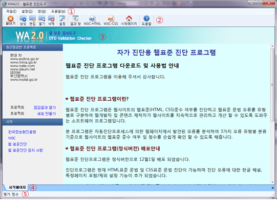
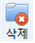
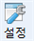
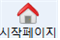

시작페이지
KW3C 2.0의 시작페이지는 주메뉴(①), 아이콘툴바(②), 콘텐츠영역(③), 탭영역(④), 상태바(⑤)로 구성됩니다.

주메뉴(①)는 KW3C2.0이 제공하는 기능을 메뉴로 제공하는 영역입니다. 주메뉴에 대한 소개는 접근성기능을 참고하십시오.
아이콘툴바(②)는 자주 사용하는 KW3C2.0 기능을 마우스를 이용하여 사용 할 수 있도록 제공되는 영역입니다. 툴바에 포함된 아이콘은 다음과 같습니다.
- : [끝내기] KW3C2.0 프로그램을 종료합니다.
: [생성] 새 프로젝트를 생성합니다.
: [편집] 프로젝트 목록을 열어 기존 프로젝트를 선택하여 재편집 후 평가를 진행할 수 있습니다.
: [열기] 프로젝트 목록을 열어 프로젝트 평가결과를 볼 수 있습니다.
-  : [삭제] 프로젝트 목록을 열어 프로젝트를 삭제할 수 있습니다.
-  : [설정] 프로젝트 생성시에 적용되는 웹 소스 다운로드 설정을 위한 기본 값을 설정할 수 있습니다.
: [결과 창] 이미 열려있는 평가결과 화면으로 이동합니다.
: [W3C-HTML] W3C-HTML 평가 페이지 화면으로 이동합니다.
: [W3C-CSS] W3C-CSS 평가 페이지 화면으로 이동합니다.
-  : [시작페이지] KW3C2.0의 시작페이지 화면으로 이동합니다.
: [도움말] 현재 창과 같이 KW3C2.0에 대한 도움말 화면으로 이동합니다.

콘텐츠영역(③)은 필요에 따라 시작페이지 화면, 평가결과 화면, W3C-HTML 웹표준 평가페이지 화면, W3C-CSS 평가페이지 화면 및 도움말 화면 등의 최대 5개의 페이지가 표시됩니다. 각 페이지간의 전환은 탭(④)과 툴바의 결과창, W3C-HTML, W3C-CSS등을 이용하여 전환이 가능합니다. 메뉴를 통해서도 화면 전환이 가능합니다.
탭영역(④)은 콘텐츠 영역의 열린 페이지를 직접 선택하는 영역입니다.
상태바(⑤)는 웹 사이트의 평가결과 점수를 표시합니다.